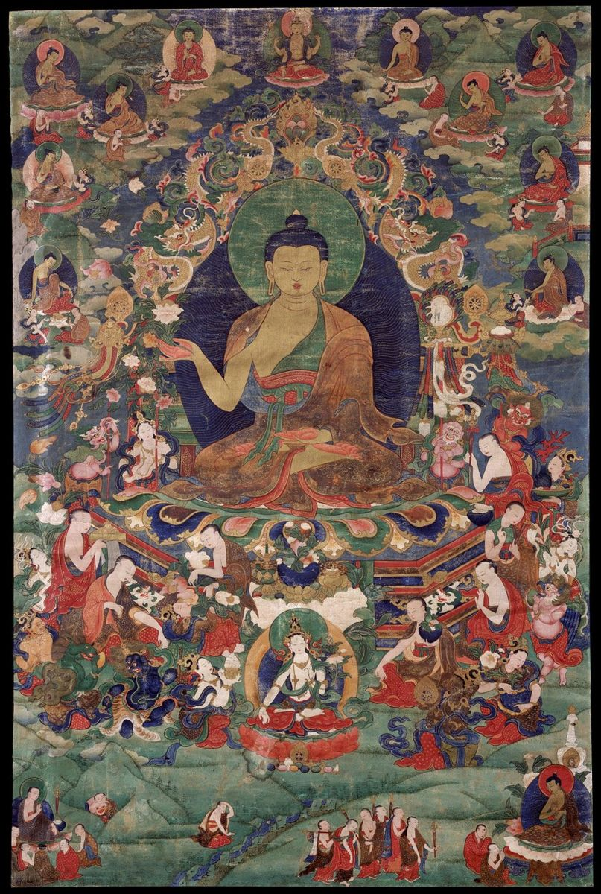
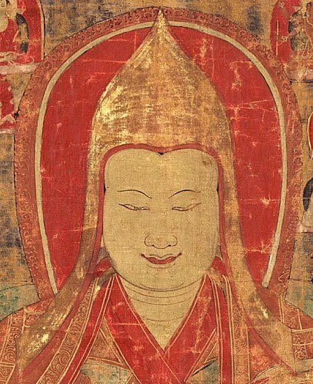

How a Thangka Is Made: From Cotton Canvas to the Final Eye-Opening
A finished thangka can look effortless, as if the image simply appeared on the cloth. In reality, every traditional scroll is the result of a long, ordered process that has been passed from teacher to student for centuries. Knowing the steps helps you appreciate the work in front of you, and it also helps you understand why a genuine hand-painted piece takes weeks or months to complete.
This guide follows a thangka from blank cotton to the moment the painter opens the deity's eyes, the traditional final touch.
Step 1: Preparing the Canvas
Most thangkas are painted on cotton. The painter cuts a piece slightly larger than the planned image and sews or ties it onto a wooden frame using a cord laced through the edges. The lacing lets the painter tighten the cloth evenly, like the skin of a drum.
Next comes the ground layer, a type of gesso made from white chalk or clay mixed with animal-hide glue. The painter spreads it thinly on both sides of the cloth so it fills the weave. Once dry, the surface is rubbed with a smooth stone or shell, sometimes after dampening it, until it becomes flat and slightly glossy. This polishing step is tiring but important. A rough surface makes fine lines impossible.

Step 2: The Grid and Proportions
Before any figure is drawn, the painter marks a grid of guidelines on the canvas. These lines follow strict proportional systems laid out in traditional treatises. A peaceful Buddha, a bodhisattva, a wrathful protector, and a human teacher each follow different measurements, often counted in units based on the size of the face.
The grid ensures that a Buddha's body is balanced and correct, which matters for a painting meant as a meditation support. Students spend years memorizing these proportions before they are trusted to draw a main figure.
Step 3: The Charcoal Sketch
Using sticks of charcoal, the painter sketches the composition: the main figure, the throne or lotus, the halo, the attendants, and the landscape. Mistakes can still be brushed away at this stage. Once the drawing is right, it is fixed with fine ink lines so it will not smudge under the paint.
Some workshops use a pounce pattern, a perforated drawing through which charcoal dust is tapped to transfer a standard design. This is a traditional method, not a shortcut, and is especially common for complex mandalas. The detail and finishing on top of the transfer still have to be done entirely by hand.
Step 4: Laying in the Colors
Painting begins with the largest areas, usually the sky and the background landscape, and moves toward the center. Colors are made from ground minerals and plant dyes mixed with hide glue, and they are applied in flat, even layers. The painter works with a palette of small bowls and keeps the glue warm so the paint flows properly.
The order is practical. Background colors go down first because figures will overlap them. Next come the robes, the lotus seat, the halo, and finally the body of the deity. Each color must dry before the next one touches it.
Step 5: Shading and Modeling
Flat color is only the beginning. To create depth, the painter adds shading using very diluted pigments or dyes. In one common technique, the brush is barely moistened and the color is applied in many tiny strokes, slowly building a soft gradient. Clouds, folds of fabric, flower petals, and flames all gain their volume this way.
Shading is where the skill of the painter becomes obvious. A beginner's shading looks patchy, while a master's looks like a gentle mist. On a large scroll, shading alone can take weeks.
Step 6: Gold Work
Gold is applied after most of the painting is finished. Painters grind real gold into a powder, mix it with binder, and paint it onto jewelry, crowns, robe borders, halos, and decorative patterns. Some areas are later burnished with a smooth stone tip so they shine. Very fine gold lines may be drawn over colored areas to show brocade patterns or the edges of clouds.
Gold is expensive and unforgiving, because it is difficult to correct once applied. A clean, confident gold line is one of the best indicators of a skilled painter. Our separate guide to gold in thangka art explains burnishing and the rare gold-ground style in detail.
Step 7: Outlining
With the colors and gold in place, the painter goes back over the entire image with fine outlines in black, red, or darker shades of the base color. Outlining sharpens every form and separates overlapping elements. A good outline is smooth and even and changes thickness naturally as it curves.
Step 8: Opening the Eyes
The eyes of the main figure are traditionally painted last. This moment, often described as opening the eyes, is treated with care because it gives the deity its presence. Many painters choose an auspicious day for it, and some say prayers before they begin. After this step, the painting is considered complete as an image.
Step 9: Mounting in Brocade
Once removed from the frame, the painting is usually mounted in a textile frame of silk brocade. A typical mount has colored borders, a decorative panel below the image sometimes called the door, a thin silk veil to protect the surface, and wooden rods at the top and bottom so it can hang and roll. Mounting is often done by a separate specialist.
Many thangkas are also consecrated by a lama, who may write sacred syllables on the back of the canvas behind the main figure. This turns the painting from an artwork into an object used in practice.
How Long Does It Take?
A small, simple thangka from an experienced painter may take a couple of weeks. A medium painting with detailed shading and gold work can take one to three months. Large, complex compositions, such as a full mandala or a scene with many figures, can take half a year or more. Time depends on size, detail, the materials used, and the painter's level.
Why the Order of Steps Matters
The sequence is not just habit. Each stage protects the one before it and prepares the one after it, which is why skipping or rushing a step shows clearly in the finished painting.
Signs You Are Looking at Real Handwork
- Visible brush texture in shading when you look closely.
- Small, natural irregularities in repeated patterns.
- Gold that sits slightly raised on the surface rather than printed flat.
- Cloth texture visible at the edges where paint is thin.
- A canvas back that shows the gesso and, often, consecration marks.

Frequently Asked Questions
Do painters work alone?
Often a master directs a workshop where students prepare canvases, grind colors, and paint backgrounds, while the master paints the faces, the main figure, and the gold.
Can a thangka be painted on silk?
Yes, but cotton is far more common. Some thangkas are also made with appliqué or embroidery instead of paint.
Is a stencil transfer still hand-painted?
Yes. The transfer only guides the outline. All coloring, shading, gold, and finishing are still done by hand.
Conclusion
From a stretched piece of cotton to the final open eyes, a thangka passes through many careful stages, each one built on the last. Once you understand the work behind canvas preparation, proportion grids, layered shading, and gold line work, you can look at any scroll with new eyes and recognize the patience that made it.